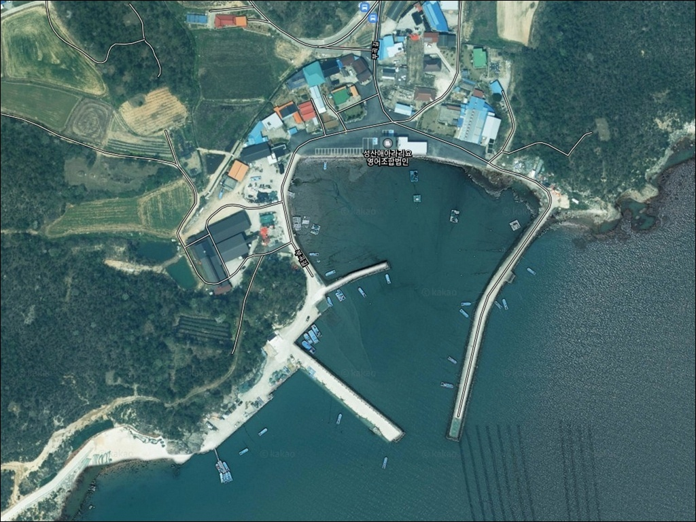
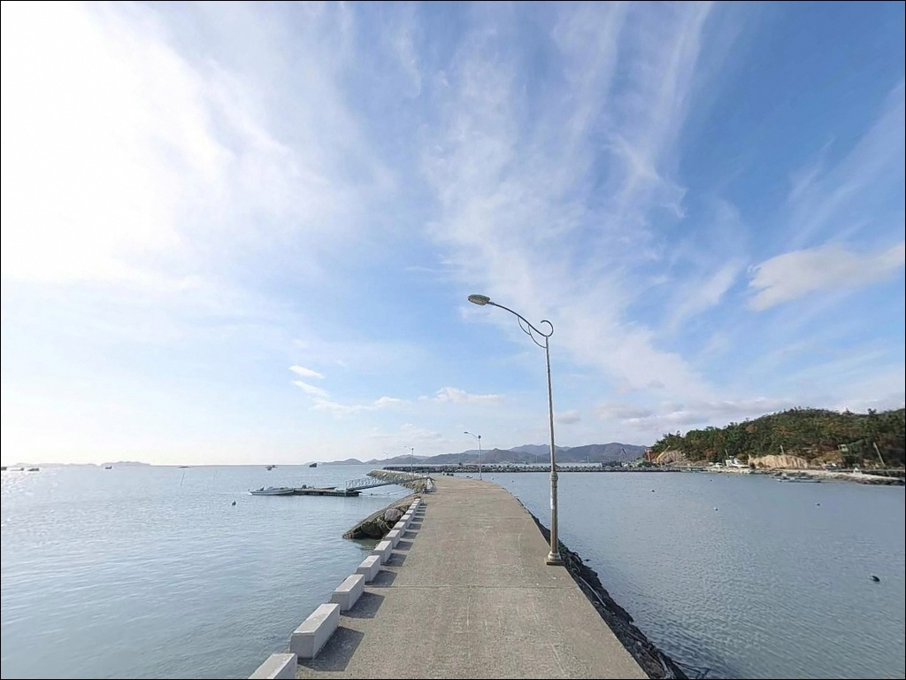
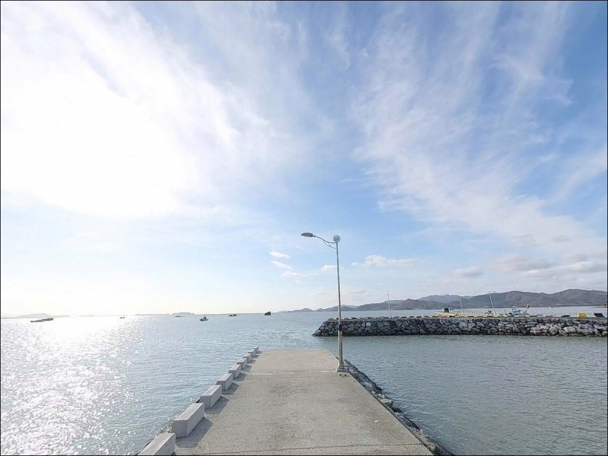
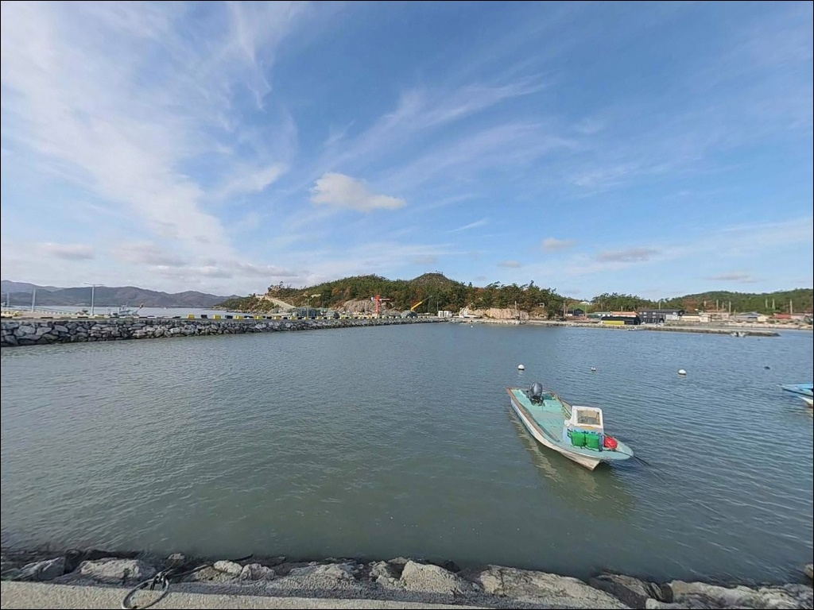
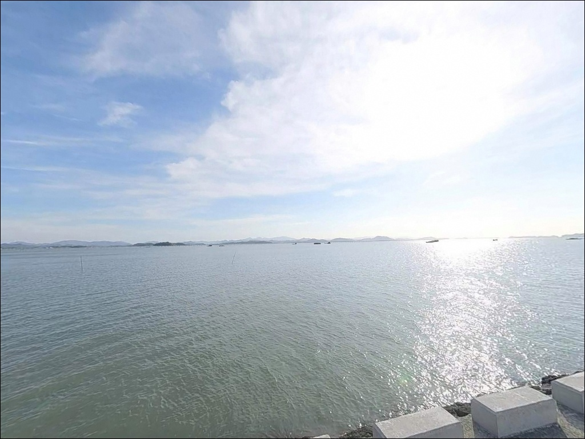
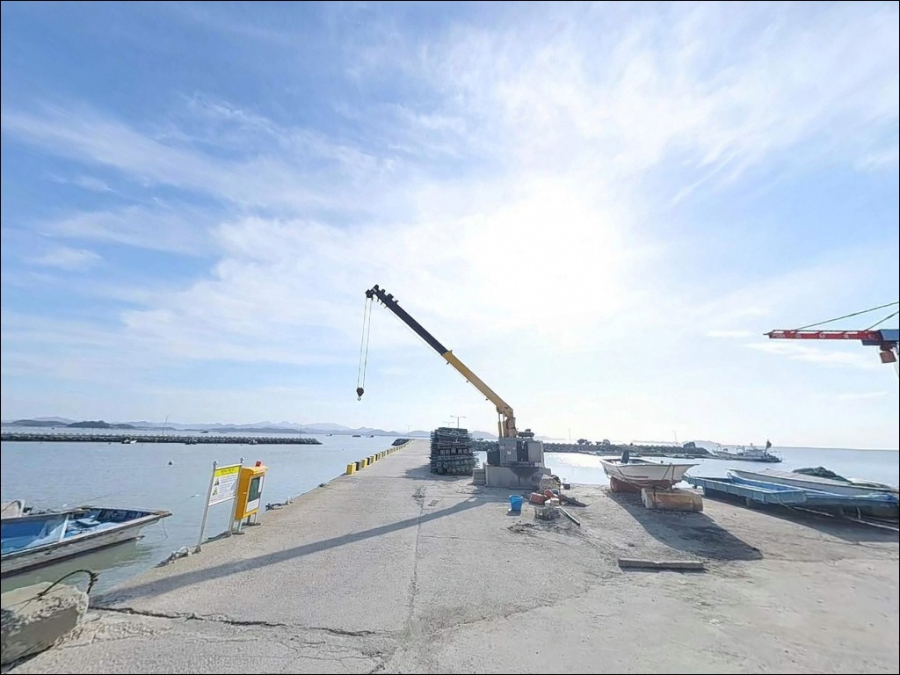
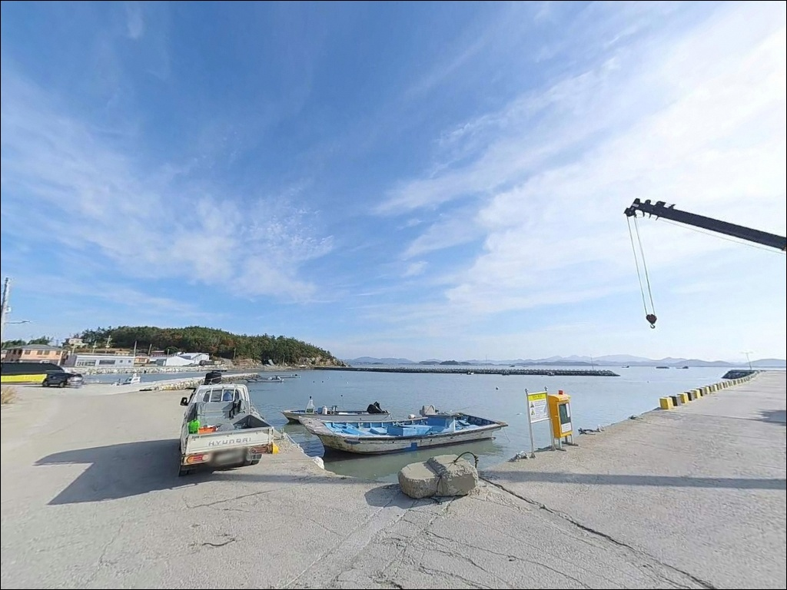
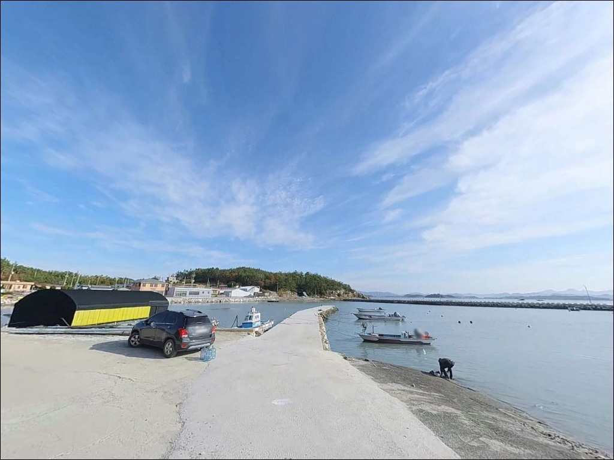
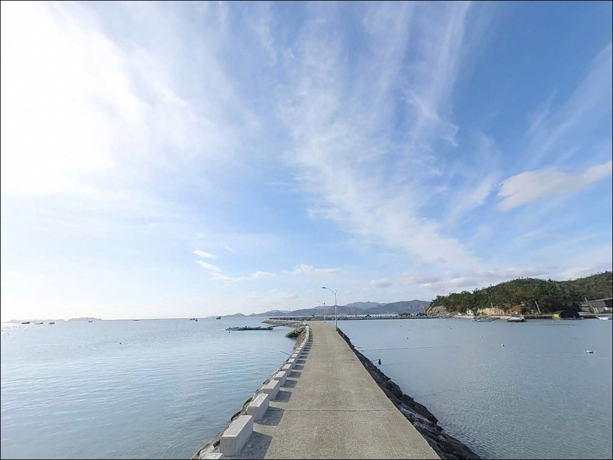

성산방파제, 전남 해남군 풍경이 깊은 여운을 남기는 차박, 낚시 해안


포인트 안내
성산방파제
전남 해남군 황산면 부곡리 361-26
물때 확인 없이 황산면 해안 방파제를 찾으면
간조에 도착하는 순간 뻘이 드러나
어떤 채비를 써도 낚시가 불가능해집니다.
성산방파제는 조수간만의 차가 큰 남해서부 내만형 해역으로,
만조 전후 타이밍이 조과의 전제 조건이 되는 구조입니다.
해남 황산면 부곡리 해안에 자리한 성산방파제는
전문 낚시 정보가 거의 없는 조용한 어촌 포인트입니다.
화원반도 남부 해안선에서 바다 방향으로 뻗어 나간
소규모 마을 방파제 구조이며,
뻘 바닥과 조류 흐름이 결합된
생활낚시 중심의 탐색형 포인트입니다.
이 글은 성산방파제의
진입 환경, 차박 여건, 물때 판단 기준,
낚시 스타일 적합성에 집중합니다.
조황 단정이나 특정 어종 보장은
이 글의 범위에 포함되지 않습니다.

1. 진입 동선과 포인트 접근성
황산면 부곡리는 국도 18호선에서 분기하는
농어촌 마을 도로를 통해 해안까지 접근하는 구조입니다.
성산마을 앞 방파제까지의 진입로는
1차선 수준의 마을 안길이며,
일부 구간은 폭이 좁아
대향 차량과의 교행이 쉽지 않은 구간이 있습니다.
승용차나 소형 SUV는 진입이 가능한 수준이지만,
대형 캠핑카나 장축 차량이라면
출발 전 위성지도로 진입로를 먼저 확인하는 것이 안전합니다.
방파제 끝단이나 초입에서 회차해야 하는 상황이 생길 수 있어,
후진 진출이 어려운 차량은
갓길 여건까지 함께 살펴두는 편이 좋습니다.
주차는 방파제 진입 직전 도로변 공터나
방파제 포장 구간을 활용하는 방식이 일반적입니다.
소규모 마을 선착장 특성상
어선 작업 동선과 겹치지 않는 자리를
먼저 확인하는 것이 기본입니다.

2. 차박 환경과 야간 체류 여건
성산마을 일대는 민가 밀집도가 낮고
주변이 산지로 둘러싸인 구조여서
야간 통행량이 거의 없는 편입니다.
차박 프라이버시는 상대적으로 양호한 환경이지만,
방파제 자체 가로등이 없는 구조여서
개인 조명 장비는 필수로 준비해야 합니다.
남쪽 해안 방향으로 개방된 구조라면
남서 계열 바람의 영향을 받는 날이 있습니다.
낚시를 마치고 조용히 하룻밤 머무는 차박에는
나쁘지 않은 환경이지만,
주차 공간이 협소한 만큼
공간 확보 여부를 현장에서 먼저 확인해야 합니다.
편의시설이 없는 어촌 포인트이므로
쓰레기 처리와 취사 방식 모두
완전 자급 기준으로 준비하는 것이 기본입니다.
야간에 민가 방향 소음이 전달될 수 있어
엔진 공회전과 고성방가는
이 포인트에서의 기본 매너입니다.


3. 주변 편의시설 및 인프라 현황
성산방파제 반경 3km 이내에는
편의점이나 식당을 기대하기 어렵습니다.
소규모 어촌 마을 구조상
완전 자급 체제로 진입하는 것이
현실적인 준비 방식이며,
식수·얼음·낚시 소품·연료 모두 출발 전에 갖춰야 합니다.
황산면 소재지 방향으로 이동하면
편의점과 주유소 등
기본 생활 인프라를 이용할 수 있습니다.
성산방파제에서 이 방향까지 거리가 있으므로
부족한 장비는 출발 지점에서 미리 챙기는 것이 효율적입니다.
응급 상황을 대비한 비상약품·수분·연료는
출발 전 충분히 준비해야 합니다.
현장 인근에서 보충하기 어렵다는 점을
기본 전제로 삼는 것이 이 포인트를
방문할 때의 준비 기준입니다.

4. 물때를 맞춰야 낚시 자리가 생기는 이유
성산방파제가 속한 황산면 해역은
조수간만의 차가 큰 남해서부 내만형 해역입니다.
만조 기준 2~5m 수준의 수심이
간조 때는 뻘이 넓게 드러나
낚시 자체가 불가능해지는 구조로 바뀝니다.
물때 확인 없이 출발하면 이 상황을 그대로 만나게 됩니다.
바다타임에서 성산방파제 물때를 사전에 확인하고
만조 전후 2~3시간을 기준으로 출발 시각을 맞추는 것이
이 포인트의 기본 전략입니다.
사리 전후에는 조류가 세져 채비 컨트롤이 까다로워지므로,
조금 전후 타이밍이 낚시하기 수월한 편입니다.
기상 변화도 출발 당일 아침 다시 확인하는 것이 좋습니다.
남서 방향 외해에 가까운 위치라
바람이 강한 날에는 방파제 끝단 자리가
위험해질 수 있습니다.
뻘 바닥 특성상 채비 손실이 잦으므로
여분 채비는 넉넉하게 준비하는 것이 기본입니다.

5. 지형 기반 낚시 여건 분석
성산방파제는 황산면 해안선에서
바다 방향으로 뻗어 나간 소규모 마을 방파제입니다.
방파제 외항 쪽은 조류 흐름이 직접 닿는 구조이며,
끝단 수심이 만조 기준 2~5m 수준으로 형성됩니다.
조류가 흐르는 만조 전후 구간이
이 포인트에서 낚시 여건이 살아나는 타이밍입니다.
바닥은 뻘 성격이 강한 남해서부 해역 특성을
그대로 가지고 있습니다.
채비를 너무 멀리 보내면 뻘 속에 파묻혀
회수 자체가 어려워지는 경우가 있어,
방파제 끝단에서 가까운 범위 안에서
채비를 운용하는 것이 효율적인 방식입니다.
방파제 내항 쪽은 물 흐름이 상대적으로 잔잔해
처넣기 채비로 바닥층을 탐색하기 좋은 구조입니다.
만조 전후 타이밍을 놓치면 뻘 해역 방파제에서는
채비가 바닥에 박혀 사실상 낚시가 불가능해집니다.
출조 전에 최신 조황을 꼭 검색해 보시기 바랍니다.


6. 포인트에 어울리는 낚시 스타일
이 포인트에서 가장 현실적인 낚시는 원투낚시입니다.
방파제 끝단에서 내항과 외항 양방향으로
채비를 내리면 망둥어·붕장어를
기대해볼 수 있는 지형 조건을 가지고 있습니다.
뻘 바닥을 감안해 청갯지렁이를 미끼로 쓰고,
발밑 10m 내외 범위를 먼저 탐색하는 방식이 어울립니다.
내항 쪽으로는 처넣기 채비가 잘 맞습니다.
물 흐름이 잔잔한 내항 구간에 채비를 내려두면
야간 붕장어 입질을 기대할 수 있는 구조입니다.
여름부터 늦가을까지가 붕장어 시즌이며,
가을 9~10월에는 황산 해역 전반에서
망둥어 씨알이 올라오는 경향이 있습니다.
루어낚시는 만조 전후 조류가 살아 있는 타이밍에
소형 미노우나 메탈로 숭어 또는
농어 소형 개체를 노려볼 수 있는 방식입니다.
성산방파제는 온라인 정보가 거의 없는 포인트로,
방문 전 인근 조황 정보를 먼저 검색하는 것이
실패를 줄이는 가장 현실적인 방법입니다.

7. 대안 포인트와 플랜 B 동선
성산방파제 진입이 여의치 않거나
조건이 맞지 않을 때
가장 먼저 고려할 대안은 같은 부곡리에 있는
매부리항입니다.
발판이 안정적이고 주차 공간이 있어
성산방파제보다 접근성이 나은 편이며,
원투낚시 중심으로 이 일대에서
현지 출조 기록이 있는 포인트입니다.
황산면 해역 전체가 여의치 않다면
해남의 대표 방파제인 어란진방파제(해남군 송지면)를
대안으로 검토할 수 있습니다.
규모가 크고 낚시 정보가 풍부해,
처음 이 일대를 탐색하는 경우라면
어란진방파제를 기점으로 삼고
성산방파제를 병행 탐색하는 동선이 효율적입니다.
징의도 인근 해역은 황산면 같은 권역의
가을 망둥어 포인트로 현지에 알려진 곳입니다.
성산방파제와 같은 조류 환경을 공유하고 있어
시즌 중 이동 탐색 동선에 함께 묶어 볼 수 있습니다.
차박 환경을 우선으로 찾는다면
매부리항 인근 주차 공간이
가장 현실적인 대안입니다.

한적한 어촌 포인트일수록
물때 하나가 조과를 결정합니다
망둥어나 붕장어 위주로 조용히 손맛을 즐기는 낚시인이라면
성산방파제의 한적한 분위기는 잘 맞는 환경입니다.
복잡한 포인트보다 사람이 없는 자리를 선호하고
생활낚시 방식으로 느긋하게 탐색하는 스타일이라면,
이 포인트의 지형 조건이 충분한 이유가 됩니다.
반면 화려한 조황이나 현장 인프라를 기대하고
찾는 포인트는 아닙니다.
물때를 맞추지 않으면 낚시 자리 자체가 사라지고,
현장 인근에서 장비를 보충하기도 어렵습니다.
온라인 정보가 거의 없는 포인트인 만큼
황산면 인근 조황을 방문 전 반드시 먼저 검색하는 것이 좋습니다.
조용한 어촌 마을에서 하룻밤 머물며
낚시와 차박을 함께 즐기고 싶은 낚시인이라면,
물때 하나만 제대로 맞춰가도
기억에 남는 출조가 될 수 있는 곳입니다.